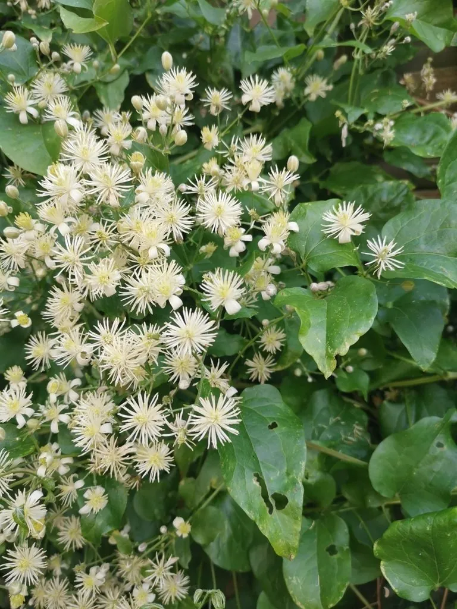

花卉与草本 · 植物界
铁线莲 Clematis florida

毛茛科铁线莲属藤本，茎细韧如铁线，花大而美，是世界著名的藤本花卉，被誉为藤本皇后。
- 分类
- 门被子植物门纲木兰纲目毛茛目科毛茛科属铁线莲属
- 栖息环境
- 低山丘陵林缘与灌丛，喜凉爽湿润、排水良好
- 地理分布
- 中国江苏、浙江、江西、湖北、湖南、广东、广西、云南等地；日本
- 保护级别
- 暂无评估；野生种群受采挖影响，部分产区加以保护
物种志
铁线莲为毛茛科铁线莲属藤本，茎细长、坚韧如铁线，长达数米，紫褐色。叶片对生，三出复叶或羽状复叶，小叶卵形，边缘全缘或具齿。花单生于叶腋，花大，花被片六至八枚，白色至乳白色，雄蕊多数、紫褐色，花期五月至六月；瘦果扁平，具宿存羽毛状花柱，果期秋季。
铁线莲分布于中国江苏、浙江、江西、湖北、湖南、广东、广西、云南等地，日本也有，多生于低山丘陵的林缘和灌丛。它喜光也耐半阴，喜凉爽湿润，要求疏松肥沃、排水良好的碱性至中性土壤，忌积水。花大而雅、攀援性强，是篱笆、棚架和墙面的优良藤本花卉，园艺品种极多，被誉为藤本皇后。根和全草在民间入药，有祛风通络之效。
形态与习性
- 株高藤本，茎长可达 3 m
- 花期5–6 月，花白色至乳白
- 果期秋季，瘦果具羽状花柱
- 光照喜光，也耐半阴
- 水分喜湿润，忌积水烂根
- 土壤疏松肥沃、偏碱性壤土
- 主要用途篱笆棚架绿化，根入药
趣味知识
- 铁线莲的茎细而韧，颜色紫黑如铁线，因此得名。
- 它的瘦果带有羽毛状的长花柱，成熟时像一团团银丝。
- 铁线莲园艺品种超过三千个，是世界上栽培最广泛的藤本花卉之一。